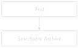

# code/chapter_03/keyword_search.py
import re
def tokenize(text: str) -> list[str]:
return re.findall(r"[a-z0-9]+", text.lower())3 Searching DDRs

Progress ███░░░░░░░░░ 3 / 12 · Estimated time: 45–60 min · Difficulty: 🟢 Beginner
3.1 Learning objectives
By the end of this chapter, you will be able to:
- Build an inverted index over a folder of cleaned DDR text.
- Answer keyword queries like “which reports mention losses?” in milliseconds instead of minutes.
- Explain why exact keyword matching, while fast and simple, will eventually miss things a drilling engineer would consider an obvious hit.
3.2 Operational Problem
You now have clean, expanded text for every DDR. Sarah, the intervention engineer, asks the question out loud on the next call: “Which reports mention losses?” or “Show me the report where they had to fish for something.” Opening files one by one doesn’t scale past a handful of reports — you need an index.
3.3 Example DDR extract
NoteReal query and expected hit
Query: "losses"
Expected hit: FORGE-16A-78-32_Drilling_019_2020-11-07.txt
→ "Mud fluids seepage losses in six hours 9 bbls"That’s report #19 — a minor, real seepage-loss event, easy to miss by eye across 76 reports, trivial to find once indexed.
3.4 Theory
An inverted index flips the natural document → words relationship around: instead of asking “what words are in this document,” it stores, for every word, which documents contain it. Looking up “losses” becomes a single dictionary lookup instead of scanning every file. This is the same core idea behind every search engine, from grep to Google — the difference is scale and ranking sophistication, not the fundamental mechanism.
TipEngineering Translation: Index
An index here is exactly what it sounds like from the front of a manual: a table of contents for reports. Instead of “chapter 4, see page 112,” it says “the word ‘losses’, see report_019.” Looking a word up in that table is instant; reading every report to find the same word is not.
Tokenization matters here: “losses” and “LOSSES” should be the same token, and punctuation shouldn’t create spurious tokens (6,507' should not prevent 6507 or nearby words from matching cleanly).
documents inverted index
------------------------------ --------------------------
report_038: "...became stuck..." "stuck" -> {report_038}
report_019: "...seepage losses..." "pipe" -> {report_038}
report_050: "...milled up lost..." "losses" -> {report_019}
"milled" -> {report_050}
query "stuck" -> look up "stuck" -> {report_038} (one dict lookup,
not ten file scans)3.5 Implementation
3.5.1 Step 1: split text into searchable words
3.6 What problem are we solving?
Before we can look anything up, every report’s text needs to be broken into a consistent set of words — so “Losses”, “losses,” and “LOSSES” all count as the same match.
3.7 Inputs
- Any string of report text.
3.8 Expected Output
A list of lowercase words with punctuation stripped out, for example:
["mud", "fluids", "seepage", "losses", "in", "six", "hours", "9", "bbls"]3.9 What just happened?
This lowercases the whole report, then pulls out every run of letters or digits as one word, throwing away punctuation, quotes, and apostrophes. 6,507' becomes just 6507 — no comma, no foot mark — so it can be matched consistently whichever way it was typed in the original report.
3.9.1 Step 2: build the lookup table
3.10 What problem are we solving?
Build a lookup table that remembers which reports contain each word, so a search never has to open and re-scan every file.
3.11 Inputs
- A folder of cleaned, expanded report text:
datasets/ddr_text_expanded/.
3.12 Expected Output
A dictionary mapping each word to the set of report filenames that contain it, for example:
{"losses": {"FORGE-...-32_Drilling_019_2020-11-07.txt"},
"stuck": {"FORGE-...-32_Drilling_038_2020-11-26.txt"},
...}from collections import defaultdict
from pathlib import Path
def build_index(text_dir: Path) -> dict[str, set[str]]:
index: dict[str, set[str]] = defaultdict(set)
for path in sorted(text_dir.glob("*.txt")):
tokens = set(tokenize(path.read_text(encoding="utf-8")))
for token in tokens:
index[token].add(path.name)
return index3.13 What just happened?
We built a lookup table that remembers which reports contain each word. For every report, we found its unique words and, for each one, noted “this word shows up in this report.” The result is one table you can check instead of seventy-six files you’d otherwise have to open.
3.13.1 Step 3: answer a query
3.14 What problem are we solving?
Given a query like “stuck pipe,” find every report that contains all of those words — instantly, using the lookup table instead of opening a single file.
3.15 Inputs
- The lookup table from Step 2.
- A query string, e.g.
"stuck pipe".
3.16 Expected Output
The set of filenames containing every word in the query, for example {"FORGE-...-32_Drilling_038_2020-11-26.txt"} for the query "stuck".
def search(index: dict[str, set[str]], query: str) -> set[str]:
query_tokens = tokenize(query)
if not query_tokens:
return set()
results = index.get(query_tokens[0], set()).copy()
for token in query_tokens[1:]:
results &= index.get(token, set())
return results3.17 What just happened?
For each word in the query, we looked up its list of reports in the table, then kept only the reports that appeared on every one of those lists. That’s why this is called an AND query: a report only matches if it contains every word you searched for, not just one of them. The challenge exercise below asks you to add an OR option too.
3.18 Production Reality
This index lives entirely in memory and rebuilds itself every time you run the script — fine for 76 reports, and still fine for a few thousand. A real multi-well archive stretches this in ways worth knowing about early:
- thousands of reports mean rebuilding the index on every run gets slow — real systems save the index to disk or a database instead
- OCR’d scanned reports (Chapter 6) introduce garbled tokens that were never real words, bloating the index with noise
- singular/plural and tense variants (
lossvslosses,drilledvsdrilling) are treated as completely different words by this simple tokenizer, so a search can still miss obvious matches - numbers and units (
6,507'vs6507 ft) can drift apart across reports from different software or operators
None of this changes the core idea — a lookup table beats scanning every file — but it’s why production search systems add stemming, on-disk indexes, and cleanup steps this chapter deliberately leaves out.
3.19 Practical exercise
🟢 Beginner
Try it yourself: Build the index over datasets/ddr_text_expanded/ and run search(index, "fishing").
You’ll know it worked when: the result set contains two reports, not one: FORGE-16A-78-32_Drilling_049_2020-12-07.txt (the day the crew picked up a fishing BHA and logged ACTIVITY PLANNED: FISHING OPERATIONS) and FORGE-16A-78-32_Drilling_050_2020-12-08.txt (the day they actually milled up lost pieces of bit). If you expected only one result, that’s a useful surprise: the word “fishing” genuinely appears in both the planning day and the execution day, and an AND/OR keyword index has no concept of “the day it actually happened” versus “the day it was planned” — it just finds every document containing the word.
3.20 Field notes
Warning🔧 Field notes: the search that misses the day after
Query: "stuck pipe"
Result: one hit — report #38 (2020-11-26), the day the assembly actually got stuck. Report #39, the very next day, is invisible to this query.
Why: report #39’s own words are:
- “Work tight hole at 6,526’.”
- “Due to high torque decision to pull out of hole”
- “Hole drag from 6,050’ to 5,901’ no issues”
but the word “stuck” never appears anywhere in report #39. pipe does (buried in a BHA table row, Drill Pipe-5'' HWDP), but the AND search still fails because stuck alone has zero matches outside report #38.
Lesson: an engineer researching “how did the stuck-pipe situation on this well develop” would want report #39 too — tight hole, high torque, and a decision to pull out of hole are exactly the kind of continued-risk language that matters the day after an incident. Keyword search can’t surface it, because report #39 never uses the word the query asked for. This isn’t a bug in the code above — it’s the fundamental limit of matching on exact words at all. Chapter 4 comes back to this same query.
3.21 Challenge exercise
🟠 Intermediate
Challenge: Add phrase search (query tokens must appear adjacent and in order, not just co-occur anywhere in the document) and an OR operator. Test search(index, "stuck") against report #38, then try "packers OR fishing" and confirm it returns both report #49 (packers) and #50 (fishing). A reference solution is in code/chapter_03/challenge/.
3.22 Key takeaways
- An inverted index turns “search every file” into “look up a word,” which is the difference between milliseconds and minutes at scale.
- Tokenization choices (case folding, punctuation handling) determine what counts as a match — get this wrong and searches silently fail.
- Exact keyword matching is fast, simple, and fundamentally limited: it cannot find report #49 (“packers did not set… pick up Fishing BHA”) when you search “lost circulation,” even though report #19’s “seepage losses” line and report #49’s packer failure are both, in a loose sense, “things going wrong downhole” — a human would connect them faster than exact keywords can.
3.23 Repository files
| File | Purpose |
|---|---|
code/chapter_03/keyword_search.py |
Inverted index and AND-query search |
notebooks/chapter_03_explore.ipynb |
Interactive companion notebook |
3.24 Why keyword search fails
Question: “Show me previous stuck-pipe trouble on this well.”
Keyword search for “stuck pipe” finds report #38 — the day it actually happened — and stops there. It misses report #39, filed the very next day, because that report never uses the word “stuck.” Instead it says:
- “Work tight hole”
- “high torque decision to pull out of hole”
- “Hole drag from 6,050’ to 5,901’”
That’s the same operational story — continued stuck-pipe risk, one day later — written in entirely different words. Keyword search cannot connect them, because it only ever checks for exact spelling. It doesn’t know what any word means, only whether it’s present or absent.
That gap — matching meaning, not just spelling — is exactly what Chapter 4 solves, using a technique called embeddings.
CautionCHECKPOINT — Chapter 3
Tip✓ WHAT YOU BUILT
keyword_search.py — an inverted-index keyword search engine over the whole cleaned archive, fast enough to answer a query while someone’s still on the call.
3.25 What can you do now that you couldn’t do before?
You can search an archive of reports for exact words or phrases and get an answer in milliseconds, instead of opening files one at a time.
3.26 Suggested next step
Coming up in Chapter 4: Keyword search is exact and unforgiving — it doesn’t know that “high torque decision to pull out of hole” and “stuck pipe” describe related trouble. Chapter 4 replaces exact matching with semantic search, so retrieval works by meaning, not just spelling — and comes back to this exact “stuck pipe” query to see how much that actually fixes.